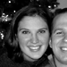
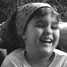
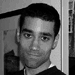
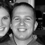
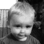

The Wedding Party
Bride's Party
- Jill MacCartney: Matron of Honor
-
Jill is awesome because she trusted us to babysit her 5 month old baby Gavin, within a month of meeting us. We basically hung out constantly thereafter and partook of many a wonderful home-cooked meal at her house while we were stuck in E-Burg. We are very excited that Jill and her husband Eric are moving to P-Town shortly for at least a year and bringing us back our baby. Of course he's 3 now, but whatever...
- Susan Andrews: Bridesmaid
-
Suzy is infamous because she was my partner in crime for many of our formative years...(14-18) She has been a staunch ally and supporter of the craziness that is my life for a number of years and will be right next to me on the porch when we're old, yelling at passers-by and kicking each other in the shins...
- Kathleen Olson: Bridesmaid
-
So, here's why Kat is cute! She can take a lump of dirt and make it pretty, or a cranky girl and make her laugh, or a sad girl and make her hair bright red! Teehee! Kat loves loves loves Eloise, Urn and flirting with a certain fiancee who shall remain nameless...
- Rose Stockman: Bridesmaid
-

Rose is smart because she picked a member of my prestigious family to marry. And because she is a smart dresser and loves babies!!! Anyone who wants to work with moms and babies is bad-ass. (She's a doula on her way to becoming a midwife.) I anticipate many happy years of discussing baby related matters with her...
- Amy Yearout: Bridesmaid
-
Amy is probably the most vibrant person I have ever met. She's a redheaded Aries. 'Nuff said. Like Suzy, she was a member of my all-girl gang of trouble makers, uhh..I mean slumber party club...anyway, we can laugh and cry at anything, frequently at the same time and I am looking forward to many years of laughing and crying with her and getting old and cranky as well...
- Jessica Pederson: Flower Girl
-

Jess is fun because she really likes bugs. (she's 6) And I really like bugs, so we're a good team. She was a student at my mom's school and I worked for her moms when they had twins 2 years ago. Jess and I spent a great summer calming babies and playing in the dirt and the pool. She rules!
Groom's Party
- Stephen Havelka: "Best Man"
-
Steve and Scott met in high school, where they bonded over how lame high school was and attended an anti-prom together. They explored the wonders of the internet (such as it was in 1995), and eventually ended up working together at Portland State University on the computer lab tech team. They share many interests, including making gutter punks dance for change, misanthropy, and crab puffs.
- Miles Johnson: Groomsman
-

Miles and Scott met at PSU, where they both worked in the computer labs and then the tech team with Steve. The three of them quickly formed an alliance against the rest of the world. The following years are a blur of pizza, late-night coding sessions, movie nights, and unfinished web sites. After a brief sabbatical in Japan, Miles has returned to continue Studio Fojar's campaign of internet terror.
- Aaron Olson: Groomsman
-
Aaron (or "Urn" as he is known to most) and Scott met through Annie. While Annie was attending Central Washington University in Ellensburg, she became close friends with Urn, who at first thought Scott was an urban legend. After they met in person he was a little less skeptical, but he still looks at Scott a little funny from time to time.
- KT Prew:
Groomsman Groomsmaid Groomswoman
-
 KT and Scott met in a freshman year basic design class at PSU. Try as she might to ditch him over the next several years (even going so far as to switch majors), he just wouldn't quit coming over on Sunday nights to watch Simpsons and X-Files. At the present, she seems to have resigned herself to her fate as Scott's best friend.
KT and Scott met in a freshman year basic design class at PSU. Try as she might to ditch him over the next several years (even going so far as to switch majors), he just wouldn't quit coming over on Sunday nights to watch Simpsons and X-Files. At the present, she seems to have resigned herself to her fate as Scott's best friend.
- David Stockman: Groomsman
-

Dave and Scott met in a freshman general education class about Einstein at PSU. They bonded over geeky things like video games, and even worked together for a brief period at the local Egghead Software. Then later they worked together in the orientation program at school, during which time, Scott spent many nights on Dave's couch. Oddly, Scott never met Dave's sister Annie until the night Dave was leaving Portland. Now they spend a lot of time playing X-Box while their fiancees talk about wedding stuff.
- Gavin MacCartney: Ring Bearer
-

Gavin is three years old and enjoys trucks. Scott and Annie got to know Gavin in Ellensburg, where they became very close friends with his parents, Jill and Eric. Playing with Gavin at the radio station eventually turned into babysitting Gavin on a regular basis. Scott taught Gavin about things like making rude faces, and Gavin taught Scott how to flirt with women (Mostly Jill and Kat).
Return To Wedding Home

{kind=link}
{kind=link}
{kind=link}
{kind=link}
{kind=link}
{kind=link}
{kind=link}
{kind=link}
{kind=link}
{kind=link}